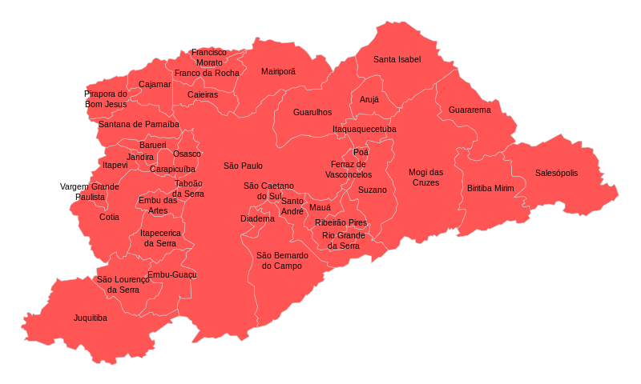

Região Metropolitana de São Paulo
A Região Metropolitana de São Paulo (RMSP) é a principal aglomeração urbana da América do Sul, ocupando a sexta posição entre as maiores do mundo, segundo relatório da Organização das Nações Unidas (ONU) de 2014.
Além disso, é a principal aglomeração urbana da América do Sul, ocupando a sexta posição entre as maiores do mundo, segundo relatório da Organização das Nações Unidas (ONU) de 2014.
A RMSP reúne 39 municípios do Estado de São Paulo, sendo a maior região metropolitana do Brasil, com cerca de 20,7 milhões de habitantes. A RMSP foi instituída pela Lei Complementar Federal Nº 14, de 8 de junho de 1973.
Concentra uma série de atividades diversificadas e seu desempenho tem impacto direto na economia brasileira. É ao mesmo tempo centro de decisões políticas e econômicas do Estado de São Paulo, com destaque para o setor de serviços como de telecomunicações, cultura, educação, saúde, transportes e gastronomia.
Representa o maior complexo industrial e o principal centro financeiro do país.
A Região Metropolitana de São Paulo é formada por 39 municípios, divididos em 5 sub-regiões:
Norte: Caieiras, Cajamar, Francisco Morato, Franco da Rocha e Mairiporã.
Leste: Arujá, Biritiba-Mirim, Ferraz de Vasconcelos, Guararema, Guarulhos, Itaquaquecetuba, Mogi das Cruzes, Poá, Salesópolis, Santa Isabel e Suzano.
Sudeste: Diadema, Mauá, Ribeirão Pires, Rio Grande da Serra, Santo André, São Bernardo do Campo e São Caetano do Sul.
Sudoeste: Cotia, Embu, Embu-Guaçu, Itapecerica da Serra, Juquitiba, São Lourenço da Serra, Taboão da Serra e Vargem Grande Paulista.
Oeste: Barueri, Carapicuíba, Itapevi, Jandira, Osasco, Pirapora do Bom Jesus e Santana de Parnaíba.
O Município de São Paulo integra todas as sub-regiões. São Paulo é a principal metrópole nacional e também considerada cidade global.
